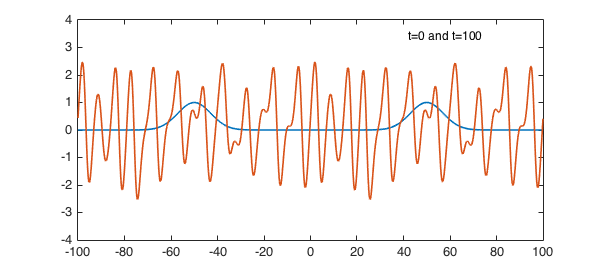
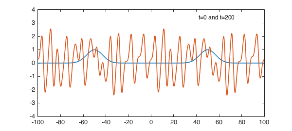
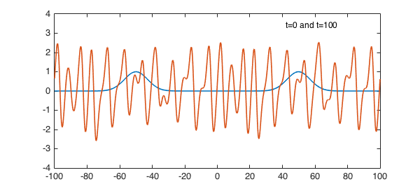
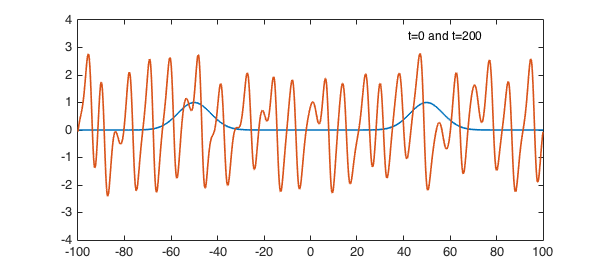

1. A symmetric solution
The Kuramoto-Sivashinsky equation mixes a nonlinear convective term, fourth-order diffusion, and second-order backward diffusion, $$ u_t = -({1\over 2}u^2)_x - u_{xx} - u_{xxxx}. $$ Its solutions have the remarkable property of being (provably) chaotic. For example, here is a calculation up to $t=100$ on $[-100,100]$ with an initial condition featuring two exponential bumps using spin [1]. At $t=100$, we see a waveform whose details are essentially random though the general picture is dominated by oscillations with a wavelength of about $9$.
tic, dom = [-100 100]; x = chebfun('x',dom); tspan = [0 100 200];
S = spinop(dom,tspan);
S.lin = @(u) - diff(u,2) - diff(u,4);
S.nonlin = @(u) -.5*diff(u.^2); % spin cannot parse "u.*diff(u)"
S.init = exp(-((x+50)/10).^2) + exp(-((x-50)/10).^2);
tic, u = spin(S,800,.025,'plot','off'); t = toc;
plot(S.init), hold on, plot(u{2}), ylim([-4 4]), hold off
FS = 'fontsize'; text(42,3.4,'t=0 and t=100',FS,12)

At time $t=200$ it looks like this, different in detail, but qualitatively the same. The general shape will persist forever, with the details constantly changing.
plot(S.init), hold on, plot(u{3}), ylim([-4 4]), hold off
text(42,3.4,'t=0 and t=200',FS,12)

By looking at the dispersion relation for the linear part of the equation, one can explain why the characteristic wavelength is about 9 [2]. In fact, the wave number $k$ most amplified by the linear terms in the equation is $k = 1/\sqrt 2$, which corresponds to a wavelength of $2\sqrt 2 \pi \approx 8.89$.
2. A nonsymmetric solution
A hallmark of chaos is sensitive dependence on initial conditions. To illustrate this, let us run the same experiment as before, but with the symmetry ever so slightly broken by moving the second Gaussian from $x=50$ to $x=49.9$. At $t=100$, one can see that the solution is slightly different from what it was before, and the symmetry in the solution is broken.
S.init = exp(-((x+50)/10).^2) + exp(-((x-49.9)/10).^2);
tic, u = spin(S,800,.05,'plot','off'); t = toc;
plot(S.init), hold on, plot(u{2}), ylim([-4 4]), hold off
text(42,3.4,'t=0 and t=100',FS,12)

At time $t=200$, all trace of symmetry is gone.
plot(S.init), hold on, plot(u{3}), ylim([-4 4]), hold off
text(42,3.4,'t=0 and t=200',FS,12)

Here is the total time for this example:
time_elapsed_in_seconds = toc
time_elapsed_in_seconds = 2.278973222000000
One can get a qualitatively correct picture faster, with coarse gridding in both time and space, but we chose large $N$ and small $dt$ so that the wave forms would be truly correct at $t=200$.
3. References
[1] H. Montanelli and N. Bootland, Solving periodic semilinear stiff PDEs in 1D, 2D and 3D with exponential integrators, submitted, 2016.
[2] L. N. Trefethen and K. Embree, editors, article on "The Kuramoto-Sivashinsky equation", The (Unfinished) PDE Coffee Table Book, https://people.maths.ox.ac.uk/trefethen/pdectb.html.